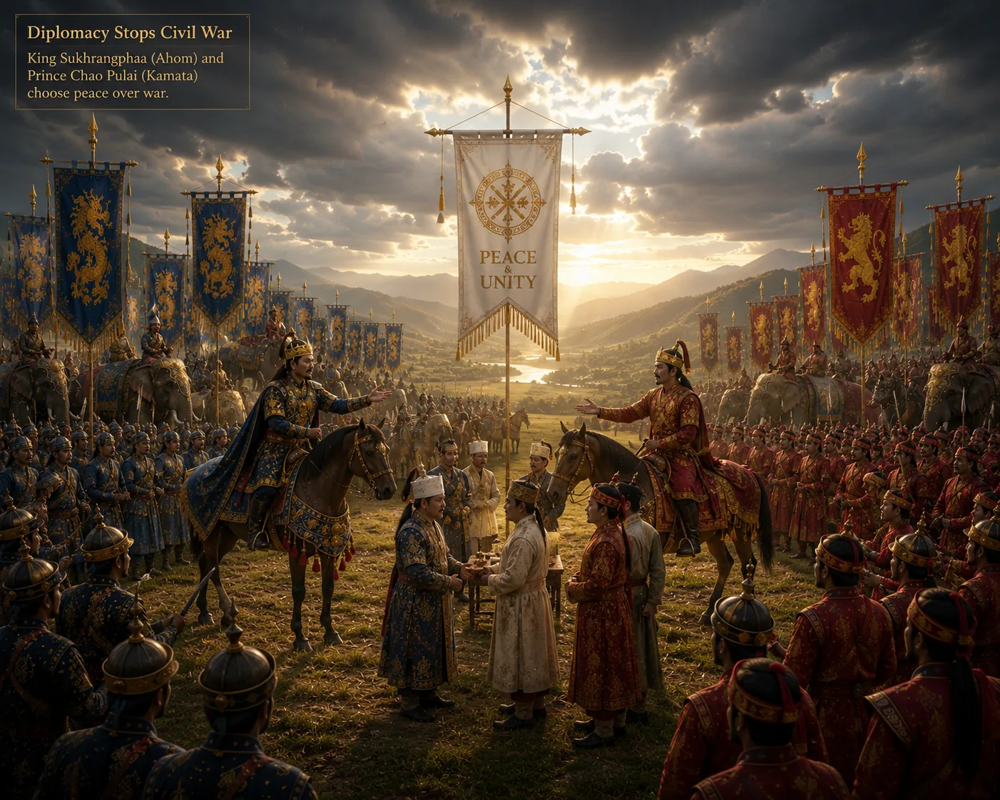

Fraternal Reconciliation Between Sukhrangphaa and Chao Pulai
c. 1338 · The coming of Sukaphaa

Rather than shedding fraternal blood, Sukhrangphaa welcomes Chao Pulai back into the court and effects complete reconciliation.
Sources have not yet been catalogued for this record.
People: Chao Pulai, Sukhrangphaa
Open this scene in the interactive archive · Follow this event on MAP